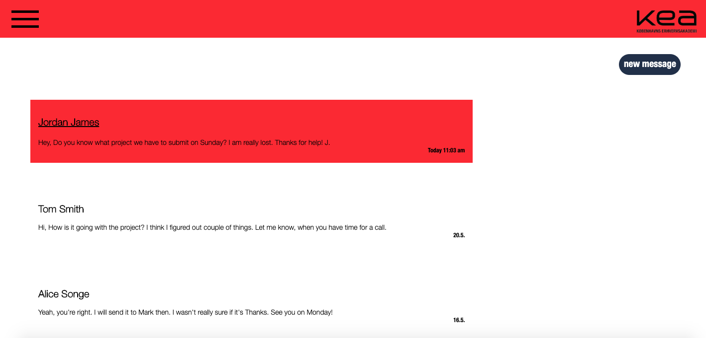
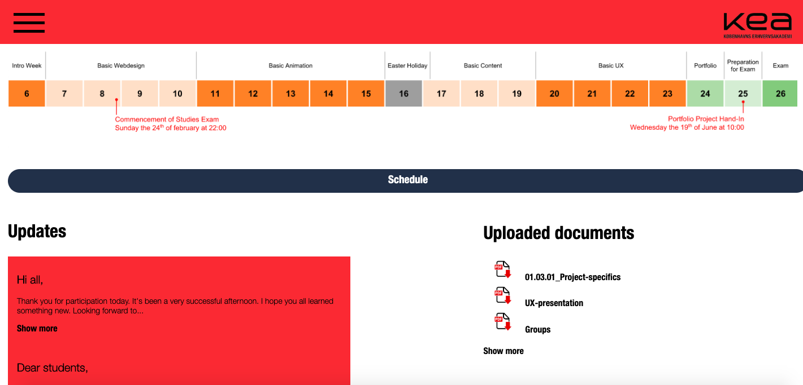

04 Basic UX
In the last theme called Basic UX our main focus was on how to make the best user experience. Often times when I thought that something is obvious, by testing my solution I found out that my intentions were not that clear.
By conducting UX tests on a few individuals from my target group I could adjust my solutions.
I had to focus on making my solution mobile-friendly. Using for example burger menu instead of the regular nav bar on top of the page.

